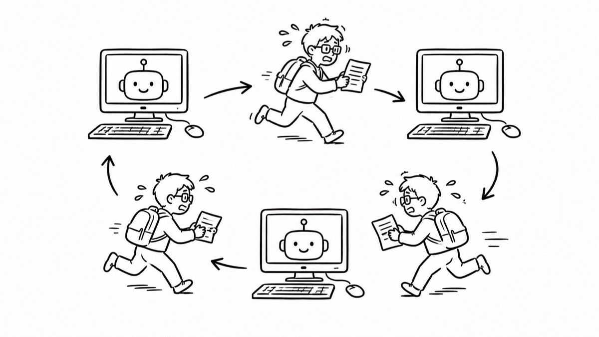
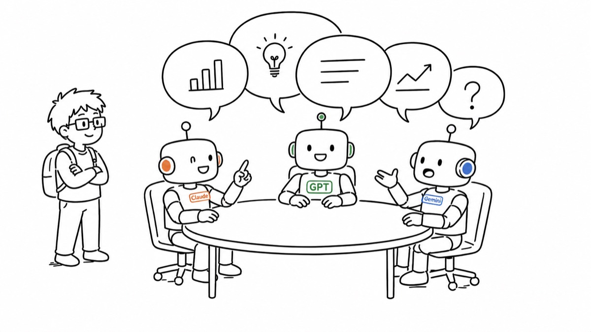
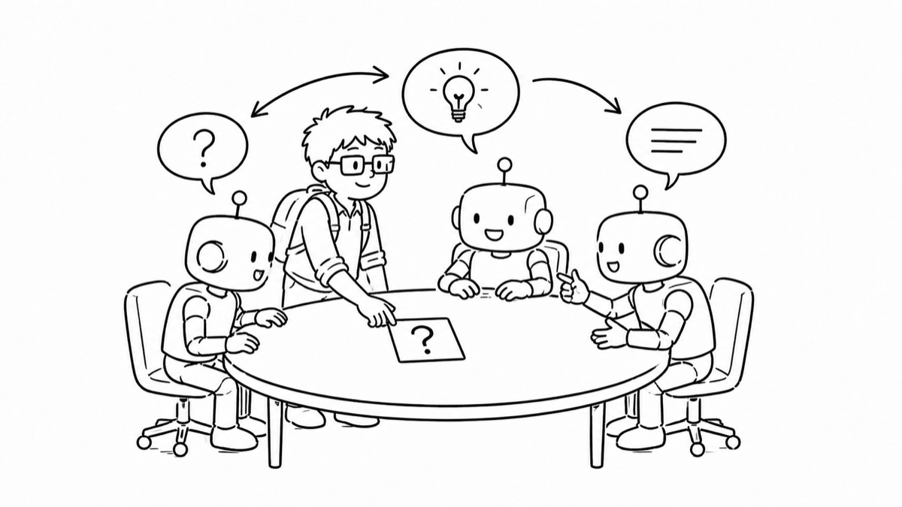
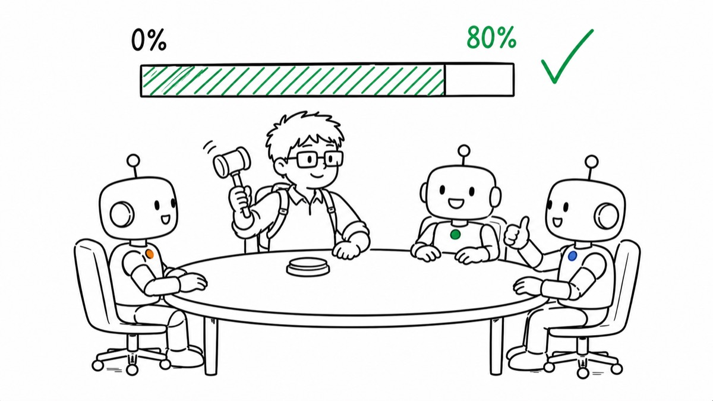
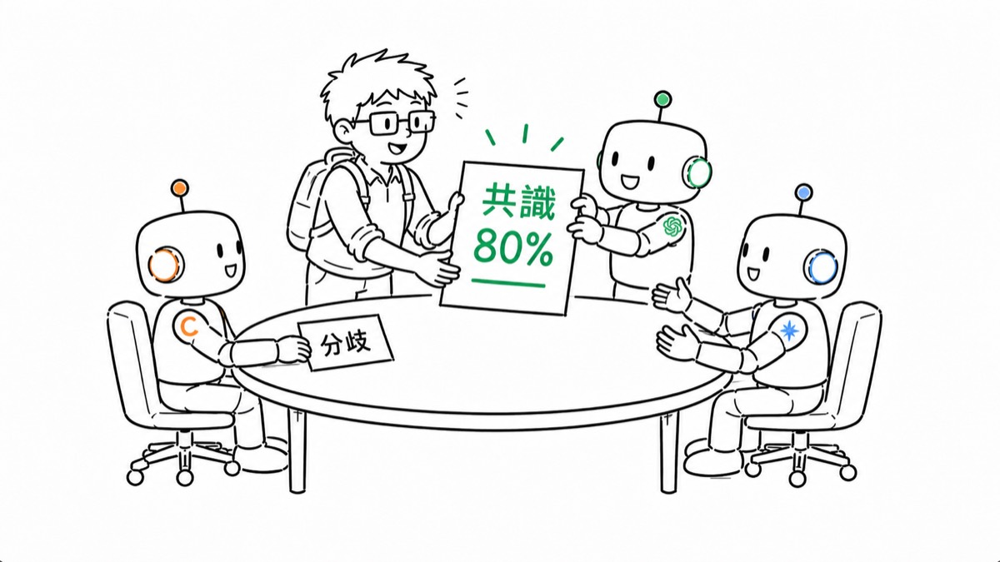

為什麼會有這個產品？
1
你是不是也這樣：同一個問題，想聽聽 GPT 怎麼說、Claude 怎麼說、Gemini 怎麼說…… 於是你開了三個視窗，複製、貼上、複製、貼上——問題還沒解決，你先變成了傳話機器。

2
為什麼不讓他們坐上同一張桌子當面討論？而且要互相反駁、正式表決—— 只會順著你講的 AI，沒資格叫董事會。

3
你只要做一件事：把題目交代清楚。剩下的，交給他們。

4
他們每講完一輪，缺什麼關鍵事實就當場問你——多半用點的就能回答。共識達到 80% 才算數。

5
回來時，桌上已經擺好結論——連分歧和少數意見都幫你留著。 所以，「AI 董事會」誕生了。
